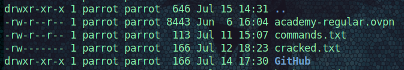

The commands and files to know to use Linux OS.
Linux Fundamentals
The bullet points of Linux that state the essential aspects.
Core Principles
- everything is a file
- small single purpose programs
- ability to chain programs for complex tasks
- work mainly in shell (the terminal)
- configuration data is stored in a text file
Components
- bootloader = code the guides the booting process (GRUB bootloader)
- OS kernel = operating system
- daemons = background services for functionality
- graphic servers = X-server allows graphical programs to run locally
- window manager = GUI, GNOME, KDE, MATE (desktop enviros)
Linux architecture
- hardware (RAM, hard drive, CPU)
- kernel
- shell
- system utility (OS functionality)
Debian Linux is a kernel which is the parent to many Linux distrobution flavours (other Linux named operating systems) such as Kali Linux and Parrot OS. Debian based kernels use apt Advanced Package Tool as the package management system.
- to install software:
sudo apt <package>
ROOT
You use root (admin) privileges to manage, control, install, remove, update and other tasks. You use sudo as super user do command, enter your password then the root command will be executed. You can just stay logged in as root with su, but it is not recommended.
- non-root user:
$ - root user:
#
COMMANDS
Commands to know and use in the terminal.
/this is the root directory, you cancd /cd ~change directory to the home directorycd Desktop/move to the desktop directory from the home directorycd ..move back a directory (anywhere in file system)rm -r test.txtremove (delete) test.txt file, the-ris recursive and is needed for deleting directoriescp file1.tx file2.mdcopy file1.txt to new file file2.mdmv *.txt ../Documents/move all text file on the desktop directory to the documents directory folder (need the../to go back)- the up arrow key to get previous commands or type
historyto see all the commands you typed Ctrl + lto clear the terminal, or type clear
HELP
For any command or software help page manual, type man <command> such as man pwd which will print the manual for what the present working directory does.
man curlget manual on how to use curlman hashcatget the manual on the hashcat program<software> --helpto get the help documentationhashcat --helpload the documentation for hashcatman findsearch for files in a directory hierarchy
SYSTEM INFO
whoamiprints who the current username isnetstatprints the network statustopprints a table of processes runninghostnameprints the computer’s nameuname -aprints out the information about your computeruname -rprints out the release version of your software
SHELL
To shell is to use the terminal and sign into another computer.
Syntax is: ssh <username>@hostname <IP address>
- example:
ssh example@10.10.10.2 - then enter your password
FIND
To find all text files in the home folder. Search the home directory for file type, all .txt files by the root user.
find $HOME -type f -name *.txt -user root
GREP
Grep is the command to find patterns of text inside a file.
grep -r password *searches every directory for the word password
Permission Management
The permissions of files and directories, who can read, write to the file (edit it) and execute the file.
- r = read
- w = write
- x = execute
- the order :
d(owner)-(group)-(other) uownergGroupoothersaall usersdis a directory.are hidden files

Type ls -la to see all files and permissions in the pwd present working directory.
To modify permissions: + , - using the letters, you can use numbers when you use the command chmod.
chmod 700 cracked.txtchanged the permissions on the the file cracked.txt giving only root user read, write and execute command permissions (the new part).
There is much more to know about Linux, this blog post was to get you to know the essentials. Take this knowledge and learn more about Linux.